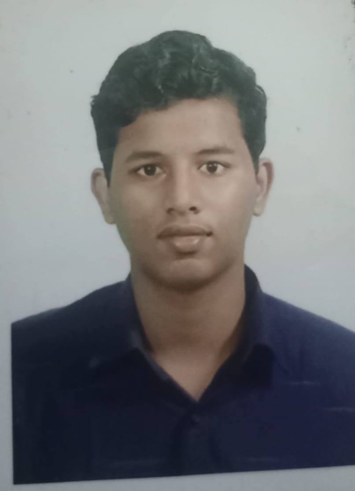

Bharath S

Professional Objective
To secure a job that will make use of my academic and technical excellence in the best possible
way to provide the best possible outcome to the employer. To apply my communication skills,
collaborate with the organization and align my personal goals with the goals of the
organization.
Education
- Class X,The TVS School,Madurai(2019)
- Class XII,The TVS School,Madurai(2021)
- Bachelor of Technology,Computer Science and Business Systems-Thiagarajar College Of Engineering(2021-2025)
Technical Expertise
- Programming Languages
- C
- C++
- Python
- Java
- SQL
- Technologies
- HTML
- CSS
- JAVASCRIPT
- Tools known
- Visual Studio Code
Personal Skills
- Problem Solving
- Efficient Communication
- Quick learner
- Team management
- Brave
- Leadership
Areas Of Interest
- Datastructures and algorithms
- Object Oriented Programming
- Database management systems
- Operating Systems
Academic Projects
- Gaming therapy portal for autism kids
- Worked as a team member for a project-an integrated gaming therapy portal
for autism kids
- Created 3 different games for 3 different traits of autism
- Contributed for the backend logic of all 3 games
- Hotel Billing system
- Worked as a team member in developing a C program that manages the
billing system of a hotel
- Contributed for a module that focused on
calculation of total ordering amount
- Galaxy Game
- Worked as a team member in developing a game involving an infinite
movement of spaceship over tiles generated in a random sequence
- Contributed for a module that focused on tile generation and spaceship
creation
Certifications
- Python and Java from Spoken Tutorial, IIT Bombay
- ESG Virtual Experience Program, TATA Consultancy Services
- Python for beginners, sololearn
Others